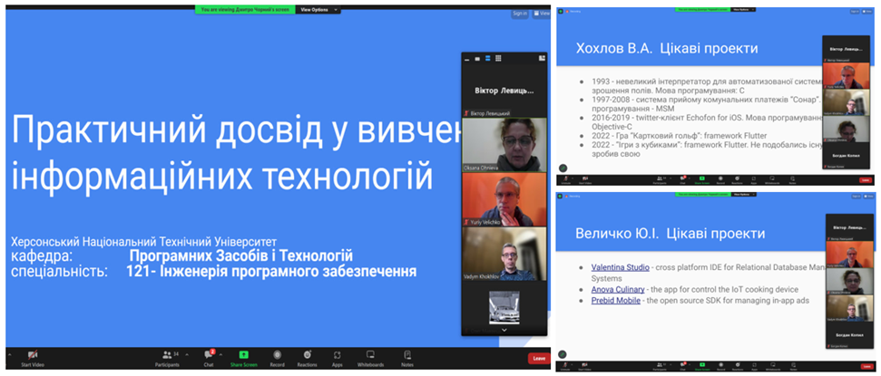

31 жовтня відбулось засідання клубу любителів англійської мови «Golden club» у форматі костюмованої онлайн-вечірки.
Студенти-учасники клубу у тематичному вбранні спілкувалися англійською мовою у невимушеній атмосфері, розширили свій словниковий запас з теми «Традиційні свята англомовних країн», взяли участь у вікторинах та жартівливих опитуваннях за темою «Halloween». Тісліченко Анна (205гр.) підготувала тематичне повідомлення з теми.
Ознайомившись з тематичною лексикою, студенти переглянули відео про історію виникнення свята та прослухали пісню-саундтрек до одноіменного фільму «Ghostbusters» виконавця Ray Parker Jr. Розібрали також граматичні конструкції, які вживаються у пісні.
Активну участь в обговоренні теми брали: Тісліченко Анна (205гр.), Севрюк Микола, Студенікіна Ксенія (152 гр.), Безган Катерина, Старушок Анастасія, Васильєва Дар'я (105(151) гр.), Семенчук Марія (205гр.), Сухіна Євгеній
Засідання секції «English for fun» підготували та провели викладачі ЦК іноземної мови: Аносова Ю.П. та Павліченко О.В.
